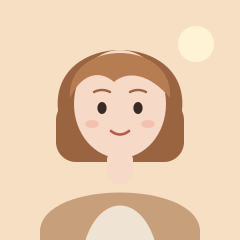
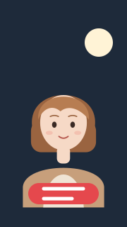
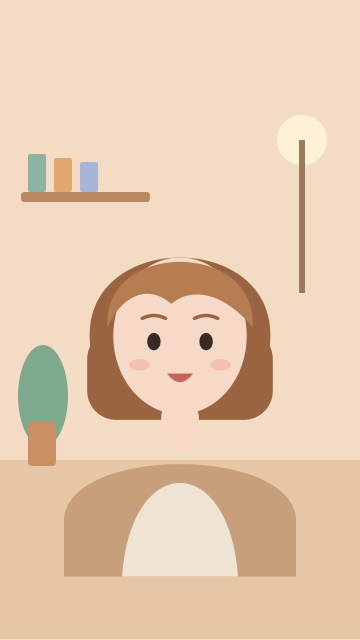

目標・成長
初配信の準備から、動画でファンと出会うところまでLIVE CREATOR JOURNEY
- 原本：TikTok資料（全24ページ）
LIVEは、始める前・配信中・配信後の工夫がつながって成長する。まずは一周を体験しよう。
LIVE CREATOR LOOP
- READY準備する
- GO LIVE配信を運営する
- SHOW動画で魅力を伝える
- CONNECT次のLIVEにつなげる
全部の機能を覚えなくていい。
LIVEと動画を、ひとつの活動としてつなげよう。
LIVEを始めたいけれど、覚えることが多すぎる
こんなことで迷っていませんか。
- プロフィールも配信設定もギフトも、どこから手を付ければいい？
- LIVE画面のボタンが、何のためにあるのか分からない
- ショート動画を作っても、LIVEにつながらない
ひとつひとつを別々に覚えようとすると、情報が多すぎて迷います。でも実際の活動は、準備する → LIVEをする → 魅力を動画で伝える → 次のLIVEを知ってもらう、とつながっています。
架空のライバーミオさんと一緒に、この4つの工程を一周します。画面はすべて架空の教材用で、操作のイメージをつかむためのものです。
読み終えると、こんな状態へ
プロフィールとLIVE画面の役割が分かり、続けられる配信予定と、LIVEにつながる1本のショート動画の設計ができています。
たとえば、ミオさん（架空）の一周。
- プロフィールに「平日21時ごろからLIVE」と書き、初配信の準備をする。
- LIVEで初見さんを迎え、楽しかった映画の話をショート動画にする。
- 動画の最後に「こういう話が好きな方は、LIVEでも遊びに来てね」。次のLIVEの予定を知らせる。
「LIVEを始めるだけの人」から、「LIVEと動画をつなげて成長を積み重ねられるクリエイター」へ。
このページで進む道
- 4つの循環
- READY
- GO LIVE
- SHOW
- CONNECT
- 私の一周プラン
- 関連教材
攻略ノート
このコンテンツで学べること

READY
プロフィール・配信前の設定・LIVE画面・ファンクラブ・LIVEゴール。
LIVEに効く理由初配信の準備が整います。
だから安心して始められる
GO LIVE
配信量×コンセプト・4つの入口・配信時間。
LIVEに効く理由続けられる活動の型ができます。
だから無理なく続く
SHOW
7つの基本・冒頭の結論・カットの長さ・セーフゾーン。
LIVEに効く理由魅力が伝わる動画を設計できます。
だから知らない人に届く
CONNECT
8つのポイントと、動画からLIVEへの案内。
LIVEに効く理由動画を見た人が次のLIVEを知ります。
だからまた会える
学んだ先に変わること
- 配信者がすること初配信の準備が整う
- 続けられる配信の型ができる
- LIVEの魅力をショート動画で伝えられる
- 視聴者動画を見た人が、次のLIVEを知る
- その先一周をくり返して、成長を積み重ねる
LIVEと動画が、ひとつの活動になる。
数値は、教材の元になった資料にある目安や比較の例です。再生数・視聴者数・ダイヤ数を保証するものではありません。
このページの最後に、「私のLIVE活動・最初の一周プラン」を書きます。4問に答えるだけでも始められます。
LIVE CREATOR LOOP｜ライバー活動の4つの循環
トップライバーへの第一歩は、全部の機能を覚えることではありません。LIVEと動画を、ひとつの活動としてつなげることです。
- READY準備するプロフィール・配信前の設定・LIVE画面を知る
- GO LIVE配信を運営する何を届けるか・いつ・どこから来てもらうか
- SHOW動画で魅力を伝えるLIVEの魅力をショート動画にする
- CONNECT次のLIVEにつなげる動画を見た人に、次のLIVEを知ってもらう
CONNECTのあとは、次のLIVEのREADYへ。この一周をくり返すことが、成長を支えます。
まずは、READY（準備）から。
READY｜初配信の準備
この工程のゴールプロフィールとLIVE画面の基本を理解し、初配信に必要な最低限の準備を整えられる。
LIVEを始める前に、まずこの5つを知っておこう。
プロフィール・配信前の設定・LIVE画面・ファンクラブ・LIVEゴール。全部を使いこなす必要はありません。まずは、何のための機能なのか理解しましょう。
READY 1プロフィールは、自分の案内板
プロフィールは、初めてあなたを知った人が「どんな人？」「どんなLIVEをしているの？」「いつ会えるの？」を確かめる場所です。
BAD「よろしくお願いします！」
BETTER「夜にのんびり雑談しています。映画とカフェが好き。平日21時ごろからLIVE予定です」
どの部分を整える？（押すと役割が出ます）

ミオ｜夜のゆる雑談
@demo_mio_live
夜にゆっくり雑談しています。映画とカフェが好き。仕事終わりの小さな出来事を話すLIVEです。平日21時ごろから配信予定。初めての方も気軽にどうぞ。
平日21時ごろからLIVE
- 最近見てよかった映画
- 配信前のカフェ時間

今夜21時から雑談LIVE
画面の番号を押すと、その部分の役割が出ます。
アイコン｜第一印象
小さく表示されても、どんな人か伝わるか。顔や雰囲気が分かると、覚えてもらいやすくなります。
自己紹介｜何を楽しめるか
「よろしくお願いします」だけでなく、どんな話をするLIVEかを一文で。
配信時間｜いつ会えるか
曜日や時間の目安があると、また来たい人が予定を立てやすくなります。
投稿一覧｜普段の雰囲気
過去の動画が、LIVEの雰囲気の予告になります。LIVEで話す内容とそろえます。
架空の教材用画面です。実際のアプリ表示とは異なる場合があります。
平日21時ごろ、はミオさん（架空）の設定です。おすすめの時間帯という意味ではありません。
ACTION自分のプロフィールで、まず直す場所をひとつ決める。
READY 2LIVEを始める前に、4つだけ確認しよう。
LIVEを始める前には、何を配信するのか、どんな画面で見せるのかを準備します。最初からすべての機能を使う必要はありません。
LIVEの準備（架空）
- 仕事終わりのゆる雑談｜最近の映画の話
- 雑談
- 明るさ：ふつう／画角：顔と手が入る
- 未設定
LIVEを開始
項目を押すと、考えることが出ます。
タイトル
何を楽しめるLIVEか。
トピック
どんなジャンル・話題を扱うか。元資料の選択肢の例は、楽曲・ダンス・美容・ファッション・フィットネス・LIVE Match。
見え方
明るさ・画角、必要に応じたエフェクト。
LIVEゴール
使う場合だけ、何を目指すか。使わない選び方もあります。
架空の教材用画面です。実際のアプリ表示とは異なる場合があります。
これは教材の中だけの模擬画面です。実際のTikTokにはつながらず、LIVEも始まりません。
ACTION次のLIVEのタイトルをひとつ書く。
READY 3LIVE中のボタン、何のためにあるの？
LIVE画面を探検しよう

仕事終わりのゆる雑談@demo_mio_live
LIVE- 視聴者Aこんばんは！
- 視聴者B今日のテーマ気になる！
- 視聴者C私も映画好きです
- 視聴者D初見です！
- ミオ初見さん、こんばんは！ 今日は最近おすすめの映画について話しています。見るだけでも大歓迎です！
画面のボタンを押すと、何のためにあるかが出ます。
コメント
視聴者と会話する場所。
いいね
無料でできるリアクション。
ギフト
利用条件を満たした視聴者が、コインを使って贈る有料の応援。
共有
LIVEの存在を、ほかの人へ知らせる機能。
コラボ
ほかのクリエイターとの共同LIVEに関する機能。
ミュート
必要に応じて、音声を止める。
一時停止
利用できる環境で、LIVEを一時的に中断するための機能。
私について
利用できる場合、自分の情報を伝えるための表示。
イベント
LIVEの予定などを知らせる機能（LIVE EVENT）。
ファンクラブ
希望する視聴者が参加できる仕組み。
架空の教材用画面です。実際のアプリ表示とは異なる場合があります。
元資料には、ハートミー・メンバーレベル・ランキングの表示もあります（次のファンクラブで説明）。
操作の位置・機能名は、いまのTikTokアプリやアカウントで違うことがあります。この画面は、実際のアプリと同じではありません。
READY 4ファンクラブは、ファンとの接点を育てる仕組み。
ファンクラブは、視聴者が自分の意思で参加する仕組みです。視聴・コメント・ギフトなど、使える機能に応じて関わり方があります。大切なのは、全員に有料の応援を求めることではありません。
ミオのファンクラブ（架空）
参加は、希望する人が自分で選びます
- メンバーALv.?
- メンバーBLv.?
- メンバーCLv.?
レベルの数字は架空の表示です（いまの条件はアプリで確認）
- ハートミー応援の気持ちを示すギフトのひとつ。ファンクラブへの参加と関わる場面があります。
- 参加のイメージ興味がある視聴者が、自分の意思で加わります。
- メンバーレベル関わり方に応じてレベルが表示される仕組みがあります。いまの条件はアプリで確かめます。
- レベル別のギフトレベルに応じたギフトの一覧があります。
- ランキングファンクラブ内の表示があります。ここでは架空のメンバーで示しています。
架空の教材用画面です。実際のアプリ表示とは異なる場合があります。
LIVEで言える一言「ファンクラブという機能もあります。興味がある方は仕組みを見てみてくださいね。コメントやいいねで参加してくれるのもうれしいです」
ACTION自分のLIVEで、ファンクラブをどう説明するか考える。
READY 5LIVEゴールは、今日の目標を見える形にする方法。
今日のLIVEゴール（設定例）
設定例を押すと、内容が出ます。
例1
1コインのギフトを5〜15個
例2
100コインのギフトを2個
例3
1,000コインのギフトを1個
架空の教材用画面です。実際のアプリ表示とは異なる場合があります。
元資料にある設定例です。3つを同時に設定することをすすめるものではありません。いまの購入価格やギフトの種類を保証するものでもありません。
BAD「絶対にこのギフトを送ってください」
BETTER「今日はこんな目標を設定しています。興味がある方は見てみてください。見に来てくれるだけでもうれしいです」
ACTIONLIVEゴールを使うかどうか決め、使うなら目的をひとつ決める。
READY の卒業ワークMY FIRST LIVE CHECK
MY FIRST LIVE CHECK
ここまでで、最初のLIVEを始める準備ができました。すべての機能を使いこなす必要はありません。
準備ができたら、配信の運営へ。
GO LIVE｜配信を運営する
この工程のゴール配信コンセプト・配信時間・流入経路を理解し、自分の生活に合ったLIVE活動の計画を作れる。
配信時間だけではなく、「何を届けるか」も考えよう。
誰に、どんな時間を届けるのか。続けられる活動の型を作りましょう。
GO LIVE 1配信量 × コンセプト・テーマ
配信時間を確保することと、配信の魅力をはっきりさせることは、どちらも大切です。ただ長く配信すれば必ずファンが増えるわけではありません。一方、よい企画があっても、配信の機会が少ないと出会いを作りにくい場合があります。
- CASE A配信時間は長い。でも、何を楽しめるのか分かりにくい。
- CASE B配信時間を無理のない範囲で確保し、雑談のテーマも決めている。
ACTION自分のLIVEを一言で説明する。
GO LIVE 2配信時間と、活動の機会
配信する時間が増えると、出会いや応援の機会は増えやすくなります。ただし、時間を増やせば成果が必ず増える、という関係ではありません。目的が明確な短いLIVEも、負担の大きい長いLIVEもあります。続けられる計画が土台です。
- 短くても目的が明確1回は短くても、何を楽しめるかがはっきりしている
- 長いけれど負担が大きい疲れて表情や会話が落ち、続かなくなりやすい
- 無理のない継続計画休む日も決めて、毎週続けられる
配信時間シミュレーター
週3日×1時間30分＝週4.5時間。休む日は週4日。
参考：元資料のネクストクリエイターは「週5日以上・1日3時間」。比べるための目安で、目標にする必要はありません。休む日も予定に入れます。
ACTION来週の配信予定を作る。
GO LIVE 3視聴者が来る4つの入口
LIVEを知ってもらう方法は、ひとつではありません。おすすめから見つける人、投稿動画から興味を持つ人、以前からフォローしている人、ランキングなどから来る人。それぞれ違うきっかけがあります。
ミオのLIVE
入口を押すと、説明が出ます。
LIVEおすすめ
LIVEのおすすめに表示されて、見つけてもらう入口。
ショート動画
投稿したショート動画で興味を持ち、LIVEへ来てもらう入口。
ランキング
ランキングなどの表示から訪れてもらう入口。
フォロワー・DM
すでにフォローしている人や、つながりのある人が来る入口。
4つの入口があることを理解するための図です。矢印の太さや大きさは、実際に来る人の割合を表していません。
ACTION自分のLIVEを知ってもらうために、いまできることをひとつ決める。
GO LIVE 4最初は、続けられる予定から始めよう。
- まず始める例週2回・1回60分
- 少し増やす例週3〜4回・1回90分
この2つは、このサイト（Academy）が示す架空の開始例です。
元資料の活動モデルを見る
| 分類 | 配信日数 | 1日の配信時間 |
|---|---|---|
| ネクストクリエイター | 週5日以上 | 1日3時間 |
| ハイポテンシャルクリエイター | 週6日以上 | 1日5時間 |
| トップクリエイター | 週7日以上 | 1日7時間 |
教材の元になった資料にある活動モデルです。いまのTikTok公式のランクの定義ではありません。
| ダイヤの目安 | 1日の配信時間 | 配信日数 |
|---|---|---|
| 50万ダイヤ | 1日3時間 | 週5日 |
| 100万ダイヤ | 1日4時間 | 週6日 |
| 200万ダイヤ | 1日5時間 | 週6日 |
| 400万ダイヤ | 1日7時間 | 週7日 |
元資料にある活動の目安です。この時間を配信すれば、このダイヤ数を獲得できる、という意味ではありません。期間は元資料に書かれていないため、つけていません。
週7日・1日7時間を、全員にすすめる標準のスケジュールにはしません。体調と生活を守れる量から始め、続けられたら増やします。
GO LIVE 5配信する時間帯を考える
- 早朝5時ごろ
- 昼11時ごろ
- 夜19時ごろ
元資料の活動例
元資料に書かれている時間帯と活動例です。どの時間がよいかは、あなたの生活と、見てほしい人の生活で変わります。
- ミオさん（架空）仕事終わりの雑談。夕方から夜にかけての配信を考える。
- 朝型ライバー（架空）朝の支度をしている視聴者へ向けた配信。
- 夜型ライバー（架空）夜更かし中の視聴者へ向けた配信。
ACTION自分の生活と、見てほしい人の生活を考えて、候補の時間を2つ選ぶ。
GO LIVE 6最後は、楽しむこと
特徴 × 配信楽しむ
配信時間や目標を考えることは大切です。でも、長く続けるには、自分自身が楽しめることも大切です。無理にキャラクターを作る必要はありません。自分の特徴や好きなことを生かして、視聴者とどんな時間を過ごしたいか考えましょう。
ACTION自分のLIVEで、これだけは続けたい楽しさをひとつ決める。
ワークショップ
MY LIVE STYLE PLAN
GO LIVE の卒業ワーク。書いた内容は、このブラウザの中だけに保存されます。
どんなLIVEを、誰に届ける？
いつ、どのくらい？
楽しめること
MY LIVE STYLE PLAN
- コンセプト
- 見てほしい人
- 1週間の予定
書いた内容は、このブラウザの中だけに保存されます
活動の型ができたら、動画で魅力を伝えます。
SHOW｜ショート動画で魅力を伝える
この工程のゴールショート動画の基本の作りを理解し、自分のLIVEの魅力が伝わる1本の動画を設計できる。
ショート動画は、まだあなたを知らない人へ魅力を届ける入口。
見つけてもらうための動画から、LIVEで会いたくなる動画へ。
SHOW 1ショート動画を使う理由
TikTokを使っている人が、全員LIVEを見るわけではありません。普段はショート動画だけを楽しんでいる人もいます。だから、ショート動画で自分の魅力を伝えることには意味があります。
円の大きさは、実際の人数の比率ではありません。
ACTIONLIVEを知らない人に伝えたい、自分の魅力をひとつ決める。
SHOW 2SHORT VIDEO CHECKLIST｜7つの基本
- 11カットを2.5秒で編集する
- 2文字情報で番組を紹介する
- 3セーフゾーンを守る
- 4とにかく最初の6秒見てもらう構成にする
- 5人物が登場する
- 6視聴者に話しかける
- 7全体の尺を24〜31秒以内にする
元資料にある動画制作の運用の提案です。いまのTikTokのアルゴリズムが求める必須の条件ではありません。
まず覚える3つ
- 冒頭で興味を持ってもらう何の動画かを早めに伝える。
- 見やすく編集する字幕・テンポ・画面の配置。
- LIVEの魅力とつなげる動画を見た人が、LIVEで楽しめることを想像できるようにする。
ACTION7つの中から、いまの動画でいちばん直したいことを選ぶ。
SHOW 3結論を、最初に置く
起承転結で組み立てながら、「結」を冒頭へ持ってきます。
ふつうの説明
- 起
- 承
- 転
- 結
ショート向けの順番
- 結
- 理由
- 実例
- もう一度結論
AとB、続きを見たくなるのはどちら？ 押して比べてみよう。
BAD
「今日は、ある出来事があったので、その話をしたいと思います。まず朝に……」
何の話か分かるまで時間がかかります。
BETTER
「昨日のLIVEで一番びっくりした出来事、実はこれです」
最初の一言で、続きを見たくなる理由が伝わります。
冒頭で、続きを見たくなる理由を伝えます。
ACTION自分の動画の冒頭を、一言で言い切る文に変える。
SHOW 4カットの長さと、6秒視聴率
- 5.44％
- 6.20％
- 14.95％
- 7.06％
- 12.60％
- 15.60％
- 17.15％
- 16.39％
元資料の比較では、2〜3秒ほどのカットが、比較的高い6秒視聴率を示しています。ただし、すべてのジャンルで同じ結果になるわけではありません。
元資料に載っている比較の例です。調べた期間やサンプルの条件が分からないため、あなたの動画でも同じ数字になるとは限りません。TikTokの測定結果として示すものではありません。
テンポを比べる
同じ絵を長めに見せています。
同じ素材を、短いカットで切り替えています。どちらが分かりやすいか比べてみよう。
架空の教材用画面です。実際のアプリ表示とは異なる場合があります。
SHOW 5動画の文字、ボタンで隠れていない？
仕事終わりの夜に、少しだけ雑談しませんか？
@demo_mio_live ミオ｜夜のゆる雑談
仕事終わりの夜に、少しだけ雑談しませんか？
@demo_mio_live ミオ｜夜のゆる雑談
架空の教材用画面です。実際のアプリ表示とは異なる場合があります。
セーフゾーンクイズ：字幕はどこに置く？
3つの位置から選ぶと、結果が出ます（選んだ答えはこのブラウザに保存）。
右下（ボタンの横）
右側のプロフィール・いいね・コメント・共有のボタンと重なりやすい位置です。
中央あたり
ボタンや説明文と重なりにくく、読みやすい位置です。
いちばん下
下の説明文の表示と重なりやすい位置です。
安全な範囲は、アプリの表示・端末・条件で変わることがあります。ここで示す位置は、すべての端末で正確な座標ではありません。
ACTION自分の動画で、大事な文字が隠れていないか確かめる。
動画ができたら、次のLIVEへつなげます。
CONNECT｜ショート動画から次のLIVEへ
この工程のゴールショート動画の視聴者が、本人のプロフィールやLIVEへ興味を持つ流れを設計できる。
動画を見てもらうだけで終わらせない。次に会える理由をつくろう。
1本の動画を、次のLIVEへの入口に変える。
CONNECT 1動画制作の8つのポイント
GROUP A｜最後まで見たい内容
- 1フル視聴してもらうように作る
- 3ランキング形式の動画
GROUP B｜コメントしたくなる話題
- 2コメント欄へ誘導する
- 4コメント欄で議論してもらう
GROUP C｜検索と説明文
- 5検索フィルターを3か月以内に設定
- 6概要欄・動画の説明文にこだわる
- 7ハッシュタグは名前・ジャンル含め4つまで
GROUP D｜冒頭の伝え方
- 8タイトル13文字・2秒間・2行まで
8つの具体的な数値と方法は、元資料にある運用の提案です。いまのすべてのTikTok投稿で必須の公式条件ではありません。
CONNECT 2最後まで見たくなる動画
BAD冒頭でテーマが分からず、話が長い。
BETTER何についての動画か、最初に分かる。
架空の例：最近買ってよかったもの「最近買って、思った以上によかったものを3つ紹介します」
ACTION自分の動画を最後まで見たくなる理由を、ひとつ考える。
CONNECT 3答えたくなる質問を、ひとつだけ。
- 雑談「休日、家で過ごす派？ 外へ出る派？」
- 食べ物「カレーは甘口派？ 辛口派？」
- 趣味「最近、一番ハマっているものは？」
人を傷つける対立や炎上を、コメントを増やすために作りません。
ACTION動画の最後に使える質問を、ひとつ書く。
CONNECT 4ランキング形式の動画
最近見てよかった映画TOP3
- 3位軽く楽しめる映画
- 2位感情が動いた映画
- 1位何度でも見たい映画
架空の構成例です。実在の作品名を無理に使う必要はありません。順番があると、続きを見たくなる場合があります。ただし、ランキング形式なら必ず再生数が伸びるとは限りません。
ACTION自分の好きなものをテーマに、TOP3をひとつ作る。
CONNECT 5説明文とハッシュタグ
説明文は、何についての動画か、誰に見てほしいかを伝える場所です。関係のない人気タグをたくさん付けるのではなく、動画のテーマに関係する言葉を選びます。
架空の説明文の例「仕事終わりにゆっくり話したい人へ。普段は夜に雑談LIVEをしています。今日は最近見てよかった映画のお話です」
ACTION自分の動画の説明文と、関係するハッシュタグを考える。
CONNECT 6ショート動画を、LIVEで会うきっかけにする。
架空の動画台本（ミオさん）
- 冒頭「仕事終わりに、誰かとゆっくり話したくなる夜ってありませんか？」
- 本題「私は普段、夜に映画やカフェの話をする雑談LIVEをしています」
- 締め「こういう話が好きな方は、よかったらLIVEでも遊びに来てくださいね」
次の配信の日時が決まっているときは、使える場合はLIVE EVENTなどの機能で予定を知らせます。
フォローや来場を強制しません。ショート動画で見せた魅力と、LIVEで楽しめることをそろえます。
もっと届けたい人へ：Xとメルマガの使い方
教材の元になった資料に書かれた施策ではなく、このサイト（Academy）の発展の提案です。Xやメルマガを使っていない人が始める必要はありません。同意のない人にメールを送りません。
X｜予告から振り返りまで
- TEASER次のLIVEで挑戦することを予告
- STORYなぜ挑戦するのか、背景を伝える
- VALUE視聴者が楽しめることを紹介
- REMINDER日時と参加方法を伝える
- AFTER振り返りと次回予告
メルマガ｜4通の構成
- 1通目活動や企画の背景
- 2通目見どころの紹介
- 3通目当日の案内
- 4通目結果・感謝・次回の予告
ワークショップ
MY SHORT TO LIVE BRIDGE
CONNECT の卒業ワーク。書いた内容は、このブラウザの中だけに保存されます。
動画を設計する
LIVEへつなぐ
MY SHORT TO LIVE BRIDGE
- 冒頭の一言
- LIVEの案内
- 投稿する予定
書いた内容は、このブラウザの中だけに保存されます
最後に、自分の一周プランを書きます。
MY LIVE CREATOR LOOP PLAN｜私のLIVE活動・最初の一周プラン
最初の4問に答えるだけでも、一周プランは作り始められます。どんなLIVEをしたい？ 誰に来てほしい？ 動画では何を見せたい？ 次のLIVEへどうつなげる？
ワークショップ
MY LIVE CREATOR LOOP PLAN
書いた内容は、このブラウザの中だけに保存されます。
最初の4問
ここだけでも始められます。
READY｜準備
GO LIVE｜配信
SHOW｜動画
CONNECT｜次のLIVEへ
MY LIVE CREATOR LOOP PLAN
- どんなLIVE
- 来てほしい人
- 動画で見せる
- 次のLIVEへ
- 次回LIVE
書いた内容は、このブラウザの中だけに保存されます
あわせて学ぶと、一周がもっと回しやすくなります。
ファン化・応援につながる理由
READY → GO LIVE → SHOW → CONNECT
準備して、LIVEで魅力を見つけ、それを動画で届け、動画を見た人が次のLIVEに来る。一周ごとに、知ってもらう入口と、また会う理由が増えていきます。
- READY
- GO LIVE
- SHOW
- CONNECT
- 次の一周
LIVE CREATOR JOURNEY で覚える4つ
全部の機能を覚えなくていい。何のための機能かを知る
配信は量×コンセプト。まず続けられる予定から
ショート動画は結論を最初に。字幕はボタンと重ねない
動画の最後で、次のLIVEで会える理由を伝える

次の配信で試すこと
できた数 0 / 4
全部試せました。下の「できた目安」を確かめましょう。
できた目安
「MY LIVE CREATOR LOOP PLAN」の最初の4問が埋まっていたらOK。
もう一歩プロフィールを直し、次のLIVEの予定を決めた。
さらに上LIVEの話からショート動画を1本作り、次のLIVEの案内まで入れた。
その先準備 → LIVE → 動画 → 次のLIVE の一周を回し、振り返りから次の一周を計画した。
一周したあとに見ること
再生数だけで決めずに見ます。
次は？